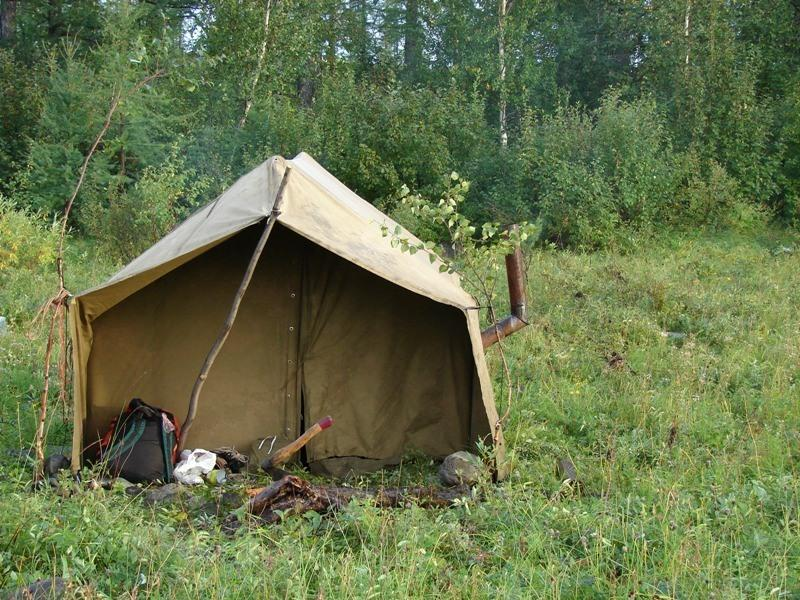
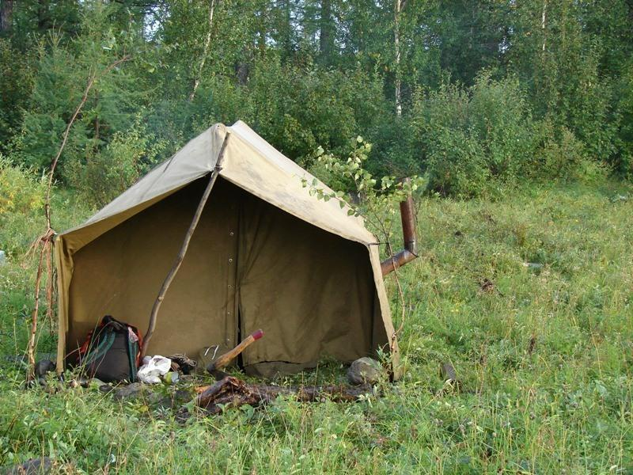

ООО "Русский Охотникъ" с 2014 года поставляет снаряжение для охоты как на территории Российской Федерации, так и за рубежом, продавая от 200 единиц в месяц. Ввиду высокого качества и относительной дешевизны покупатели заказывают у нас вновь и вновь и рекомендуют нашу компанию своим друзьям и знакомым. Наша задача - не просто продать, а сделать ваши походы на охоту удобными и запоминающимися. Наши специалисты помогают подобрать оружие и палатки под личные предпочтения покупателя.